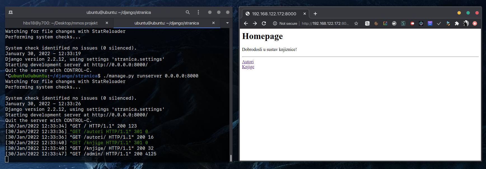
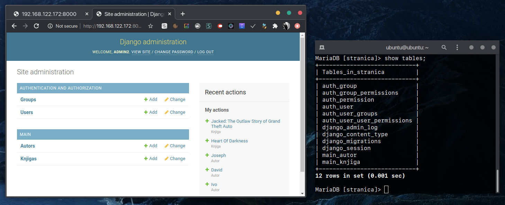
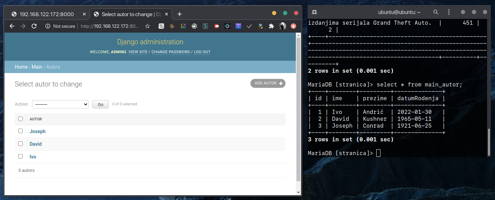

U ovom tesktu dokumentirati ću proces uspostave Django webappa pomoću virtualnih strojeva. Uspostaviti ću jedan server koji će hostati samu stranicu, drugi koji će posluživati bazu podataka stranice, te treći koja će posluživati cache stranice.
Aplikacija korištena za upravljanje virtualnim strojevima je Virt-manager. Virtualne mašine pokreću Ubuntu, te je slika OSa preuzeta sa https://cloud-images.ubuntu.com/.
Preuzetu sliku kopiramo i preimenujemo. Za svaki VM koji kreiramo potrebna je druga slika. Preuzeta slika nema dovoljno pohrane u sebi za instalaciju potrebnih softverskih paketa, te ju moramo proširiti. Povećavamo kolićinu dostupnog prostora na slici alatom qemu-img. Naredbom:
$ qemu-img resize moj-ubuntu1.img +10G Image resized.
dodali smo 10GB prostora za podatke na slici.
Prije kreiranja VMa, potrebno je i postaviti korisnićke podatke za cloud-init. Za to koristimo alat cloud-localds.
Prvo moramo napraviti user-data datoteku, koja će sadržavati korisničke podatke (kao što je lozinka za pristup sustavu.)
Sadržaj datoteke user-data je:
#cloud-config
password: asdf1234
chpasswd: { expire: False }
ssh_pwauth: True
Ovom datotekom izrađujemo sliku naredbom:
$ cloud-localds user-data1.img user-data
Sada je generiran image file user-data1.img kojeg navodimo kao jedan od diskova pri kreaciji VMa. Za svaki VM koji radimo, moramo napraviti novu kopiju slike operacijskog sustava te novu sliku korisničkih podataka
Nakon što smo kreirali sve potrebne podatke (userdata i kopiju slike OSa) možemo kreirati VM. Koristimo program virt-manager za upravljanje virtualnim strojevima. Koraci za stvaranje nove virtualne mašine su sljedeći:
Sada je VM spreman za rad i možemo ga pokrenuti. Prijavljivamo se u sustav korisničkim imenom ubuntu i lozinkom koju smo definirali u user-data.
Ovaj postupak ponavljamo za svaki VM kojeg kreiramo.
Savjet
Kako bi olakšali rad na VMu, možemo se na njega spojiti preko ssh. IP adresu VMa možemo saznati naredbom ip addr.
Prije bilo kakvog rada sa packet managerom na virtualnim strojevima, potrebno je pokrenuti naredbu sudo apt update kako bi VM imao ažurnu listu dostupnih paketa.
Django instaliramo na VM naredbom:
$ sudo apt install python3-django
Kako bi provjerili je li instalacija Djanga bila uspješna, možemo pokrenuti sljedeću naredbu:
$ django-admin --version 2.2.12
Ako dobijemo povratnu informaciju o verziji django-admina koju smo instalirali, uspješno je instaliran Django.
Ubuntu slika koju smo preuzeli dolazi sa Pythonom verzije 3, ali nema još neke dodatke koje su potrebne za pokretanje Django projekta. Alate instaliramo naredbom:
$ sudo apt install python3 python3-pip python-is-python3 pylint
Nakon što smo napravili Django projekt te napravili izmjene koje želimo, moramo pokrenuti Django server. U settings.py datoteci moramo izmjeniti liniju
ALLOWED_HOSTS = []
u liniju:
ALLOWED_HOSTS = ['*']
Ovo govori Django serveru da dopušta svim računalima pristup serveru. Ovdje se mogu i detaljnije definirati rasponi IP adresa, no za svrhu ovog projekta ostavio sam ga na *. Kod pokretanja servera tjekom razvoja (gdje mu se pristupa samo s lokalnog računala) ovo nije potrebno, no u ovom slučaju je jer se serveru pristupa sa hostnamea koji nije localhost. Možemo ovdje odrediti raspone IP adresa kojima dopuštamo spajanje, ali zbog jednostavnosti dopustit ćemo sve IP adrese.
U terminalu se pozicioniramo u direktorij projekta gdje se nalazi datoteka manage.py. Django server pokrećemo komandom:
$ ./manage.py runserver 0.0.0.0:8000
Važno
Ukoliko se ne doda 0.0.0.0:8000 na kraj runserver naredbe, server će biti dostupan samo na localhost adresi i neće biti otvoren ostalim računalima na mreži. Ovo je potrebno dodati kako bi druga računala mogla pristupati Django serveru koristeći hostname serverskog računala.
Uspješno pokretanje Django servera (i pristupanje istom na host operacijskom sustavu) vidljivo je outputu u terminalu na VMu:
ubuntu@ubuntu:~/django/stranica$ ./manage.py runserver 0.0.0.0:8000 Watching for file changes with StatReloader Performing system checks... System check identified no issues (0 silenced). January 30, 2022 - 12:33:26 Django version 2.2.12, using settings 'stranica.settings' Starting development server at http://0.0.0.0:8000/ Quit the server with CONTROL-C. [30/Jan/2022 12:33:34] "GET / HTTP/1.1" 200 123 [30/Jan/2022 12:33:36] "GET /autori HTTP/1.1" 301 0 [30/Jan/2022 12:33:36] "GET /autori/ HTTP/1.1" 200 16 [30/Jan/2022 12:33:40] "GET /knjige HTTP/1.1" 301 0 [30/Jan/2022 12:33:40] "GET /knjige/ HTTP/1.1" 200 32 [30/Jan/2022 12:33:47] "GET /admin/ HTTP/1.1" 200 4125

Pristupanje Django serveru na host operacijskom sustavu radi se tako da se u web pregledniku u address bar upiše IP adresa virtualne mašine (koju možemo saznati komandom ip addr) i porta na kojem smo definirali da će Django server raditi (u ovom slučaju to je 8000).
Pri uspostavi nekog Django projekta, po defaultu se podaci spremaju u sqlite3 bazu podataka koju Django sam kreira. Ovo ubrzava pokretanje novih projekata, ali nije prikladno za veće projekte gdje će administratorima biti potrebni napredniji DBMS alati. Zbog toga, Django podržava korištenje eksternih bazi podataka. Za ovaj projekt, koristiti ću MariaDB bazu podataka koja će se hostati na drugoj virtualnoj mašini.
Nakon što smo kreirali novu virtualnu mašinu istim postupkom koji je ranije opisan, na VMu pokrećemo naredbu sudo apt update kako bi osigurali da upravitelj paketa ima ažurnu listu dostupnih paketa. MariaDB instaliramo naredbom sudo apt install mariadb-server.
Kako bi se MariaDB vezala na adrese koje nisu localhost, moramo promjeniti konfiguracijsku datoteku koja se nalazi na adresi: /etc/mysql/mariadb.conf.d/50-server.cnf.
U uređivaću teksta otvaramo ovu konfiguraciju i potražimo liniju
bind-address = 127.0.0.1
i mjenjamo je u
bind-address = 0.0.0.0
Savjet
Kada otvaramo ovu datoteku u nekom uređivaću teksta, potrebno je to napraviti sa superuser privilegijama. Primjerice, možemo ju otvoriti naredbom sudo nano 50-server.cnf.
Kako bi osigurali da MariaDB proces koristi izmjenjene postavke, potrebno je ponovno pokrenuti proces naredbom sudo systemctl restart mariadb. MariaDB naredbenom retku pristupamo naredbom sudo mariadb.
U naredbenom retku, kreiramo novu bazu podataka. Nazovemo je po želji, ali moramo postaviti da koristi UTF-8 character set kako bi bila kompatibilna s Djangom.
MariaDB [(none)]> CREATE DATABASE stranica CHARACTER SET UTF8; Query OK, 1 row affected (0.001 sec)
Također moramo kreirati korisnika kojim će se Django server spajati na bazu. Stavimo onu IP adresu na kojoj se Django server nalazi.
MariaDB [(none)]> CREATE USER admin@192.168.122.172 IDENTIFIED BY 'asdf1234'; Query OK, 0 rows affected (0.001 sec)
Dopustimo tome korisniku sve privilegije na bazi podataka.
MariaDB [(none)]> GRANT ALL PRIVILEGES ON stranica.* TO admin@192.168.122.172; Query OK, 0 rows affected (0.000 sec) MariaDB [(none)]> FLUSH PRIVILEGES; Query OK, 0 rows affected (0.001 sec)
Nakon što smo podigli MariaDB bazu podataka na drugoj virutalnoj mašini, potrebno je konfigurirati Django server da on koristi tu bazu podataka.
Otvorimo settings.py datoteku našeg projekta i potražimo blok koji je po defaultu postavljen na:
DATABASES = {
'default': {
'ENGINE': 'django.db.backends.sqlite3',
'NAME': os.path.join(BASE_DIR, 'db.sqlite3'),
}
}
Ovo je blok konfiguracije koji govori gdje se nalazi baza podataka koju Django server koristi. Izmjeniti ćemo ovaj blok na sljedeće vrijednosti:
DATABASES = {
'default': {
'ENGINE': 'django.db.backends.mysql',
'NAME': 'stranica',
'USER': 'admin',
'PASSWORD': 'asdf1234',
'HOST': '192.168.122.64',
'PORT': '',
}
}
Ako sada pokušamo pokrenuti server, server će javiti sljedeću grešku:
(...) File "/usr/lib/python3.8/importlib/__init__.py", line 127, in import_module return _bootstrap._gcd_import(name[level:], package, level) File "/usr/lib/python3/dist-packages/django/db/backends/mysql/base.py", line 17, in <module> raise ImproperlyConfigured(django.core.exceptions.ImproperlyConfigured: Error loading MySQLdb module. Did you install mysqlclient?
Django standardno nema podršku za interakciju sa bazama podataka baziranih na MySQLu. Ova funkcionalnost dobiva se instalacijom Python paketa mysqlclient na virtualnoj mašini koja je host Django servera. Naredba za instalaciju ovog paketa je pip3 install mysqlclient.
Savjet
Ako instalacija mysqlclient ne radi, potrebno je instalirati softverski paket libmysqlclient-dev. Pokrenite naredbu sudo apt install libmysqlclient-dev.
Promjena baze podataka također zahtjeva da se podaci i modeli podataka migriraju na novu bazu. Nakon što smo postavili MariaDB bazu podataka i konfigurirali Django server da ju koristi, možemo pokrenuti migraciju podataka.
ubuntu@ubuntu:~/django/stranica$ ./manage.py makemigrations No changes detected ubuntu@ubuntu:~/django/stranica$ ./manage.py migrate Operations to perform: Apply all migrations: admin, auth, contenttypes, main, sessions Running migrations: Applying contenttypes.0001_initial... OK Applying auth.0001_initial... OK Applying admin.0001_initial... OK Applying admin.0002_logentry_remove_auto_add... OK Applying admin.0003_logentry_add_action_flag_choices... OK Applying contenttypes.0002_remove_content_type_name... OK Applying auth.0002_alter_permission_name_max_length... OK Applying auth.0003_alter_user_email_max_length... OK Applying auth.0004_alter_user_username_opts... OK Applying auth.0005_alter_user_last_login_null... OK Applying auth.0006_require_contenttypes_0002... OK Applying auth.0007_alter_validators_add_error_messages... OK Applying auth.0008_alter_user_username_max_length... OK Applying auth.0009_alter_user_last_name_max_length... OK Applying auth.0010_alter_group_name_max_length... OK Applying auth.0011_update_proxy_permissions... OK Applying main.0001_initial... OK Applying sessions.0001_initial... OK
Nakon migracije podataka u novu bazu, superuser računi koji su bili postavljeni na lokalnoj bazi podataka neće raditi. Zbog toga moramo napraviti i novog superusera. To radimo naredbom ./manage.py createsuperuser.
ubuntu@ubuntu:~/django/stranica$ ./manage.py createsuperuser Username (leave blank to use 'ubuntu'): admin2 Email address: Password: Password (again): The password is too similar to the username. This password is too short. It must contain at least 8 characters. Bypass password validation and create user anyway? [y/N]: y Superuser created successfully.
Nakon što smo uspješno kreirali novog superusera i pokrenuli MariaDB bazu podataka, možemo ponovno pokrenuti Django server.
Rad baze podataka možemo provjeriti tako da direktno pristupimo MariaDB bazi podataka preko njenog naredbenog retka. Ako je su MariaDB i Django korektno konfigurirani, te migracije uspješno izvedene, moći ćemo doći do naših podataka koji se nalaze u tablicama koje je Django sam stvorio na temelju definicije modela podataka.


Kao sustav za predmemoriju koristiti ću Redis. Redis je sustav za spremanje podatkovnih struktura. Može se koristiti kao servis za cachiranje (predmemoriju), baza podataka ili kao broker za poruke.
Na novi virtualni stroj Redis instaliramo komandom
$ sudo apt install redis
Kako bismo se uvjerili da je Redis uspješno instaliran i pokrenut, možemo pokrenuti naredbu:
ubuntu@ubuntu:~$ systemctl status redis-server.service
● redis-server.service - Advanced key-value store
Loaded: loaded (/lib/systemd/system/redis-server.service; enabled; vendor >
Active: active (running) since Sun 2022-01-30 18:00:46 UTC; 1min 18s ago
Docs: http://redis.io/documentation,
man:redis-server(1)
Main PID: 2343 (redis-server)
Tasks: 4 (limit: 4682)
Memory: 2.1M
CGroup: /system.slice/redis-server.service
└─2343 /usr/bin/redis-server 127.0.0.1:6379
Koristimo Redis na lokalnom sustavu naredbom redis-cli. Konfiguracijska datoteka Redisa nalazi se na adresi /etc/redis/redis.conf. U konfiguracijskoj datoteci moramo izmjeniti dvije opcije: moramo isključiti protected-mode te postaviti Redis da ne sluša samo na localhost adresi. Tu konfiguracijsku datoteku otvorimo u tekstualnom uređivaću (u superuser načinu rada) i izmjenimo sljedeće postavke:
bind 127.0.0.1 ::1 moramo zakomentirati.Ovo postavlja Redis da sluša na svim adresama, ne samo na localhostu. Ovo se može postaviti na specifićne adrese ili raspone adresa, ali radi jednostavnosti stavljamo da sluša sve adrese.
protected-mode yes promjenimo u protected-mode no.protected-mode je način rada koji Redisu ograničava pristup iz vanjskih mreža.
Kako bi se promjene u konfiguracijskoj datoteci primjenile, moramo ponovno pokrenuti Redis service.
$ sudo systemctl restart redis-server.service
Da provjerimo možemo li se na Redis server spajati vanjskim klijentima, na drugom sustavu možemo instalirati alat redis-cli. Tim alatom spajamo se na IP adresu Redis servera. U mom slučaju, instalirao sam ovaj alat na host računalo i spojio se na Redis server u virtualnoj mašini.
hbs18@y700:~$ redis-cli -h 192.168.122.208 192.168.122.208:6379>
Napomena
Podrška za Redis je prisutna u Django verzijama 4.0 i novijima. Ažuriranje Djanga može se izvršiti naredbom python -m pip install -U Django. Ažuriranje Djanga može uvesti greške u postojeće projekte koji su napisani za ranije verzije Djanga.
Preduvjet za korištenje Redisa na našem serveru je Python paket redis-py. Možemo ga instalirati naredbom pip3 install redis.
Kako bi postavili da Django server koristi naš Redis server za cachiranje, u settings.py datoteci našeg projekta moramo dodati sljedeći blok:
CACHES = {
"default": {
"BACKEND": 'django.core.cache.backends.redis.RedisCache',
"LOCATION": 'redis://192.168.122.208:6379',
}
}
U LOCATION upisujemo IP adresu mašine na kojoj se izvodi Redis server te njegov port. Ovime smo konfigurirali cache server, no on se trenutno ne koristi za nikakvo cachiranje.
Nakon konfiguracije caching servera potrebno je implementirati funkcionalnost cachiranja. Django 4.0 nadalje podržava više načina implementacija cachiranja, neki od kojih su per-view i per-site caching. Za potrebe ovog projekta implementirao sam per-view caching.
Per-view caching je cachiranje individualnih pogleda. Importanjem django.views.decorators.cache možemo iskoristiti @cache_page() dekorator koji cachira pojedini view.
Primjer na kodu ovog projekta (specifičnije, datoteka views.py) je sljedeći:
(...)
from django.views.decorators.cache import cache_page
# Create your views here.
(...)
@cache_page(900)
def Autori(request):
autori = Autor.objects.all()
context = {'autori': autori}
return render(request, 'main/autor_list.html', context=context)
Dekorator @cache_page() prima argument koji definira timeout cachiranog pogleda u sekundama. Dodavanjem dekoratora s vrijednosti 900 cachirana je stranica /autori na 15 minuta.
Kako bi testirali efikasnost caching sustava, možemo iskoristiti alat loadtest. Instaliramo ga naredbom sudo npm install -g loadtest. Radi jednostavnosti, pokretao sam load testove sa host operacijskog sustava.
hbs18@y700:~$ loadtest http://192.168.122.172:8000/autori/ -t 20 -c 10 ... INFO Requests per second: 236
hbs18@y700:~$ loadtest http://192.168.122.172:8000/autori/ -t 20 -c 10 ... INFO Requests per second: 335
Veći broj requesta po sekundi nakon implementacije cachiranja stranice /autori znaći da je učitavanje stranice brže, što nam govori da je implementacija cachiranja uspješna.